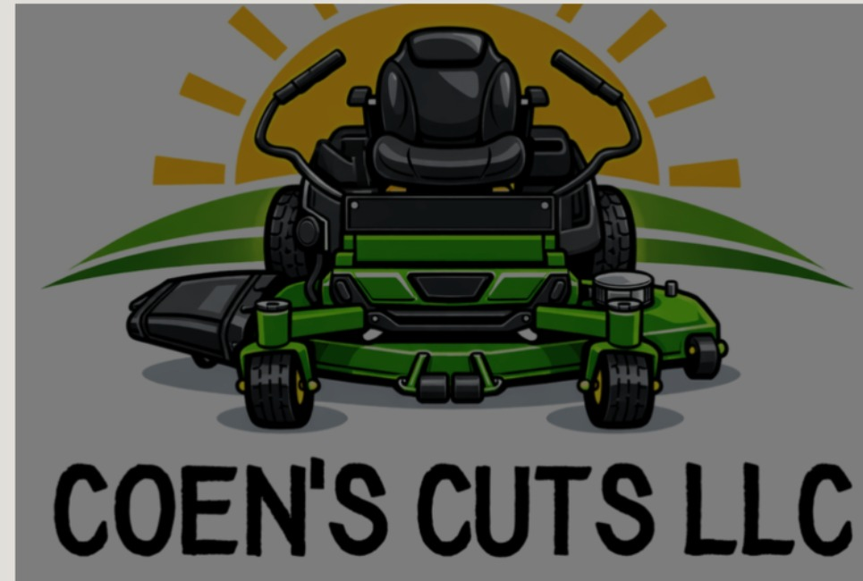

More About Coen’s Cuts
Created in 2022, Coen’s Cuts has been making people’s lives easier across Lorain County. Coen started with a push mower in 7th grade, going door to door asking for work and trying to learn. The business has grown to multiple accounts, better equipment, and bigger goals.
We’re still growing, but the focus is the same: work hard, be reliable, and help local homeowners keep their yards looking great.
Editing is on. Click any outlined text, make changes, then click Save Changes.
Built on Hustle and Trust
Every job matters because every customer is part of the reputation we’re building.